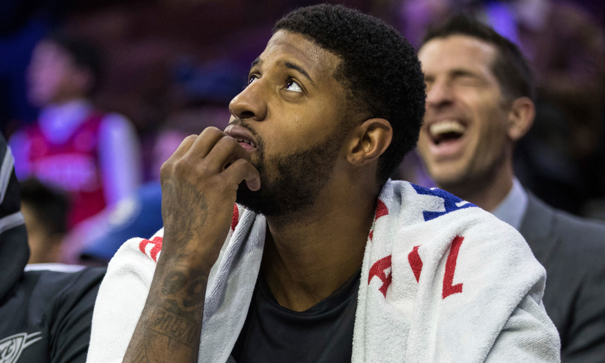
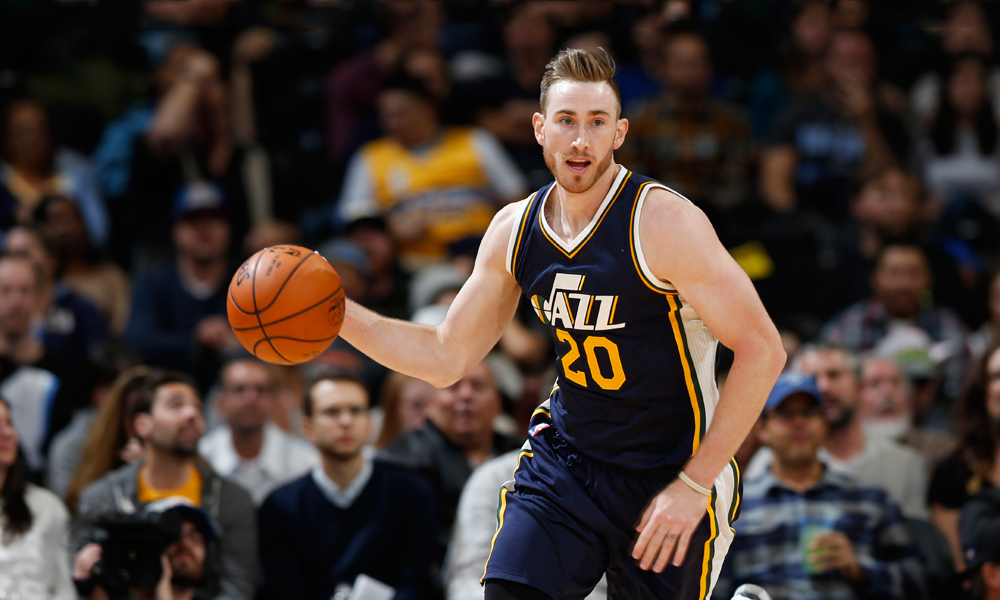
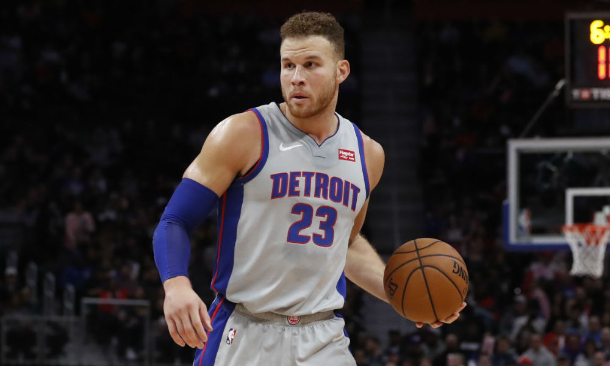
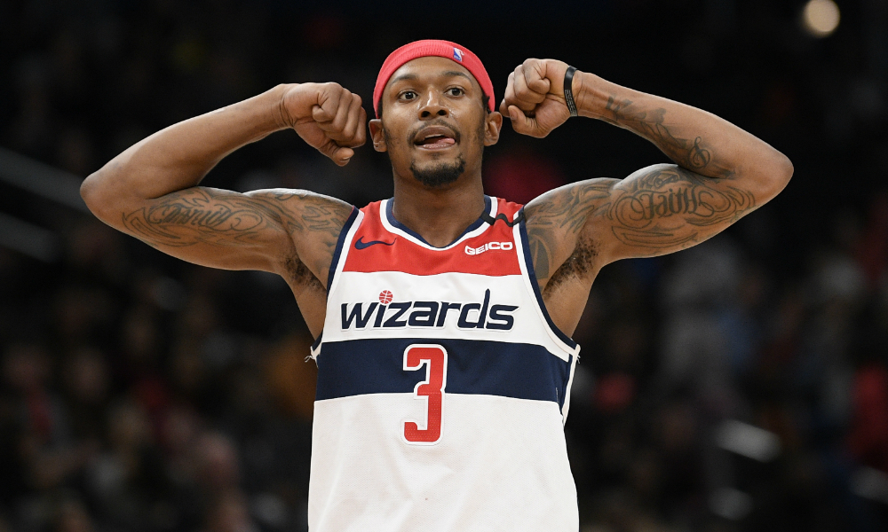
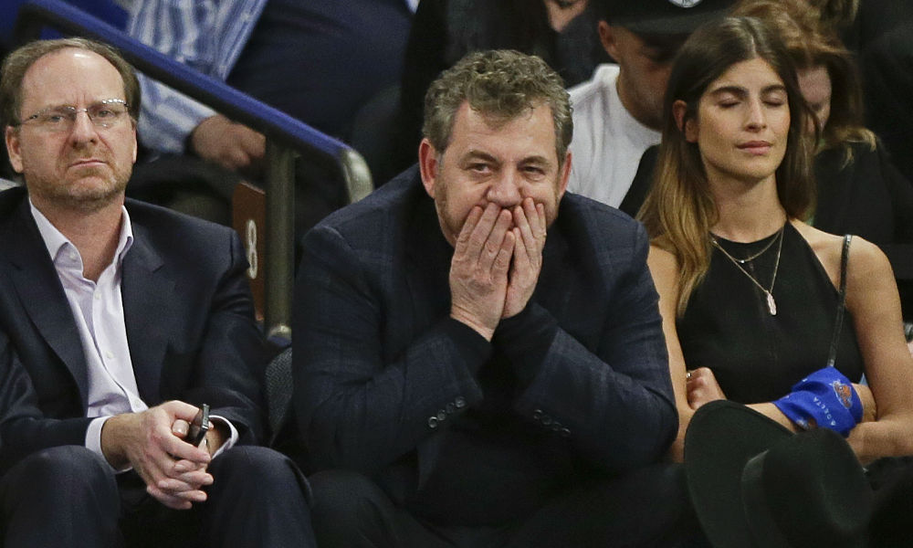

SPORTS WORLD
Basketball Blogs
-
Looking At The NBA Draft: The No. 10 Picks

As Basketball Insiders has continued its “Looking Back” series, it was only a matter of time until we crossed the double digits. Now that time has come. Today we are taking a look at how all of the tenth overall picks since 2009 have fared in the NBA. As you probably know, as the lottery picks go down further and further, the prospects’ ceilings aren’t nearly as high. At the same time, the 10-14 range is usually reserved for teams that actually had no intention of being in the lottery to begin with. It’s usually around this point in the draft where if you got someone good with this selection, you got a steal. No questions asked. Read more... -
Looking At The NBA Draft: The No. 9 Picks

Although the news appears to be heating up on a finish to the season, basketball is sadly still some considerable amount of time away. In place of actual draft content, which would be ramping up in a major way in late May, Basketball Insiders is looking at every number in the lottery, one-by-one. Amazingly, as time continues to melt together ruthlessly, we’re already up to No. 9. And without further ado, here are the hits, misses, middle of the road and role players. Did a player fall out of the league after a few years? Are they a star? Or are they at their ceiling already? We’ve got a decade’s worth of data, so here’s where all the No. 9 overall picks have landed. The Hits Andre Drummond – Detroit Pistons – 2012 Kemba Walker – Charlotte Bobcats – 2011 Gordon Hayward – Utah Jazz – 2010 DeMar DeRozan – Toronto Raptors – 2009 Really, what is there to say about this particular group? All undeniable hits. Franchise stalwarts that ushered in a new era for their teams, a familiar face that would come to climb the leaderboards and reach multiple All-Star games. As the most unnecessary group of the bunch for our No. 9s, we won’t waste too much time here. Here’s a quick primer. Read more... -
Blake Griffin: ‘I’m ready to go’ Should NBA Resume Season

After undergoing arthroscopic surgery on his left knee in January, Detroit Pistons forward Blake Griffin says he’s prepared to return if the NBA season resumes. “I feel great. I’ve basically been cleared for a while now, I’ve just been stuck at my house,” Griffin said during an appearance on The Encore with Sage Steele. “I’m ready to go whenever things pick back up.” Griffin was ruled out indefinitely at the time of his surgery. The 31-year-old has battled through hamstring and knee injuries since joining the Pistons in 2018 and was limited to just 18 games this season. Read more... -
NBALooking At The NBA Draft: The No. 8 Picks

If you’ve been tuning in, Basketball Insiders has been looking into how each lottery pick has fared in the league since 2009. We’ve categorized each player as a hit, miss, in between or a role player. We started at the top with the first overall pick and we’ve been making our way down since. At the top of the draft, the criteria for what makes a pick a hit was tougher. Being picked at the top or near the top means you’re supposed to be the face of a new era of basketball for your franchise. Now that we’re going lower and lower in the draft, the bar starts to lower. In short, the lower the pick, the lower the expectation. That brings us to who we’re looking at today — the eighth overall pick. Midway through the lottery, the eighth overall pick is expected to be good, but the likelihood nor the ceiling is nearly as high as those taken earlier. And that couldn’t be more apparent when taking a gander at how the eighth overall picks have fared since 2009. Read more... -
NBA Daily: Chasson Randle Bullish On Sticking Around For Good

No, not the appropriately-named raucous home of the Grizzlies on Beale Street in downtown Memphis. This particular Grindhouse is where Chasson Randle has been putting in daily work over the last month to stay on top of his strength and conditioning, thanks to the generosity of his girlfriend’s brother-in-law. In a garage equipped with weight racks, treadmills, and row machines, Randle has had a quality setup to maintain a routine as the NBA continues to figure out its next step amid the coronavirus pandemic. “It’s like a laboratory if you’ve ever seen I Am Legend,” Randle told Basketball Insiders in an exclusive phone interview. When he’s not playing virtual Connect 4 with his friends, trips to The Grindhouse and a private basketball gym have allowed Randle to appease the competitive fire he’s desperately missed in games… with himself. Whether it’s beating a previous number of weight reps within a set or recording better times on a bike, he’s found creative ways to keep busy and productive. “I’m treating this like it’s the summer,” Randle said. “I’m preparing for a new season, even though I do expect the season to pick up and finish out. But even in the summertime, you can play pick-up games, you can play with other people and kind of get a feel for another body. But it’s just different.” Read more...
About Us
365 Sector-4,Hiran Magri,Udaipur (Rajasthan) Pin-code: 313329